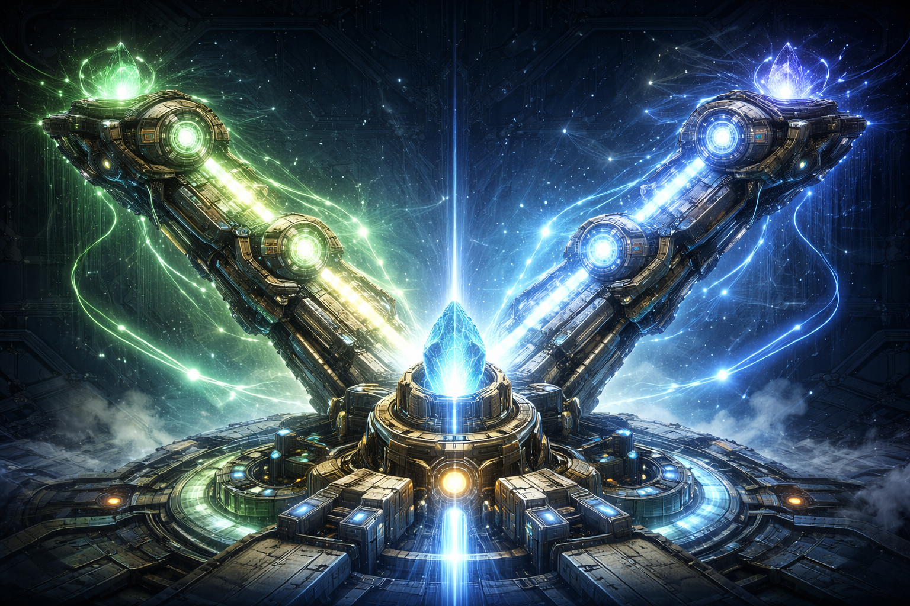

🏙️ La Leyenda de los Corazones de Numetrix
En el centro de nuestra ciudad, Numetrix, no hay cables de electricidad comunes. Todo funciona gracias a los "Conectores V".
¿Por qué son tan importantes? Porque en Numetrix, la energía solo fluye si hay Equilibrio Perfecto. Los Conectores V son los encargados de unir la Energía del Cielo (un brazo de la V) con la Energía de la Tierra (el otro brazo).
Para que la ciudad tenga luz, que los trenes se muevan y que las fábricas de helados funcionen, la fuerza en ambos brazos de la V debe ser exactamente la misma. El punto de abajo, donde se cruzan, es el "Núcleo de Poder", es especial porque ayuda a ambos brazos al mismo tiempo.
